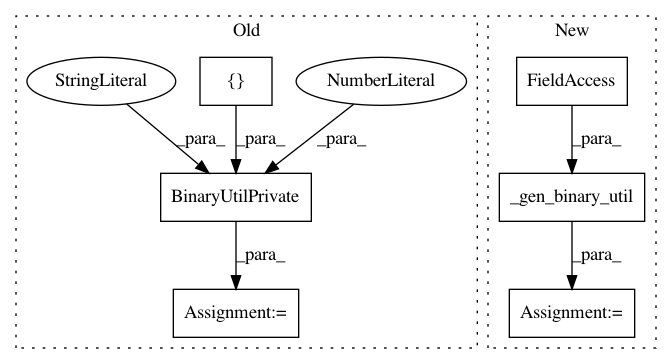

4757f9677adfec90a399cb92227fe4686faefcc2,tests/python/pants_test/binaries/test_binary_util.py,BinaryUtilTest,test_select_binary_base_path_darwin,#BinaryUtilTest#,150
Before Change
uname_func=uname_func))
def test_select_binary_base_path_darwin(self):
binary_util = BinaryUtilPrivate([], 0, "/tmp")
def uname_func():
return "darwin", "dontcare1", "14.9", "dontcare2", "dontcare3",
After Change
def uname_func():
return "darwin", "dontcare1", "14.9", "dontcare2", "dontcare3",
binary_util = self._gen_binary_util(uname_func=uname_func)
binary_request = binary_util._make_deprecated_binary_request("supportdir", "version", "name")
self.assertEquals("supportdir/mac/10.10/version/name",
In pattern: SUPERPATTERN
Frequency: 4
Non-data size: 6
Instances
Project Name: pantsbuild/pants
Commit Name: 4757f9677adfec90a399cb92227fe4686faefcc2
Time: 2018-05-14
Author: 1305167+cosmicexplorer@users.noreply.github.com
File Name: tests/python/pants_test/binaries/test_binary_util.py
Class Name: BinaryUtilTest
Method Name: test_select_binary_base_path_darwin
Project Name: pantsbuild/pants
Commit Name: 4757f9677adfec90a399cb92227fe4686faefcc2
Time: 2018-05-14
Author: 1305167+cosmicexplorer@users.noreply.github.com
File Name: tests/python/pants_test/binaries/test_binary_util.py
Class Name: BinaryUtilTest
Method Name: test_select_binary_base_path_linux
Project Name: pantsbuild/pants
Commit Name: 4757f9677adfec90a399cb92227fe4686faefcc2
Time: 2018-05-14
Author: 1305167+cosmicexplorer@users.noreply.github.com
File Name: tests/python/pants_test/binaries/test_binary_util.py
Class Name: BinaryUtilTest
Method Name: test_select_binary_base_path_missing_version
Project Name: pantsbuild/pants
Commit Name: 4757f9677adfec90a399cb92227fe4686faefcc2
Time: 2018-05-14
Author: 1305167+cosmicexplorer@users.noreply.github.com
File Name: tests/python/pants_test/binaries/test_binary_util.py
Class Name: BinaryUtilTest
Method Name: test_select_binary_base_path_missing_os